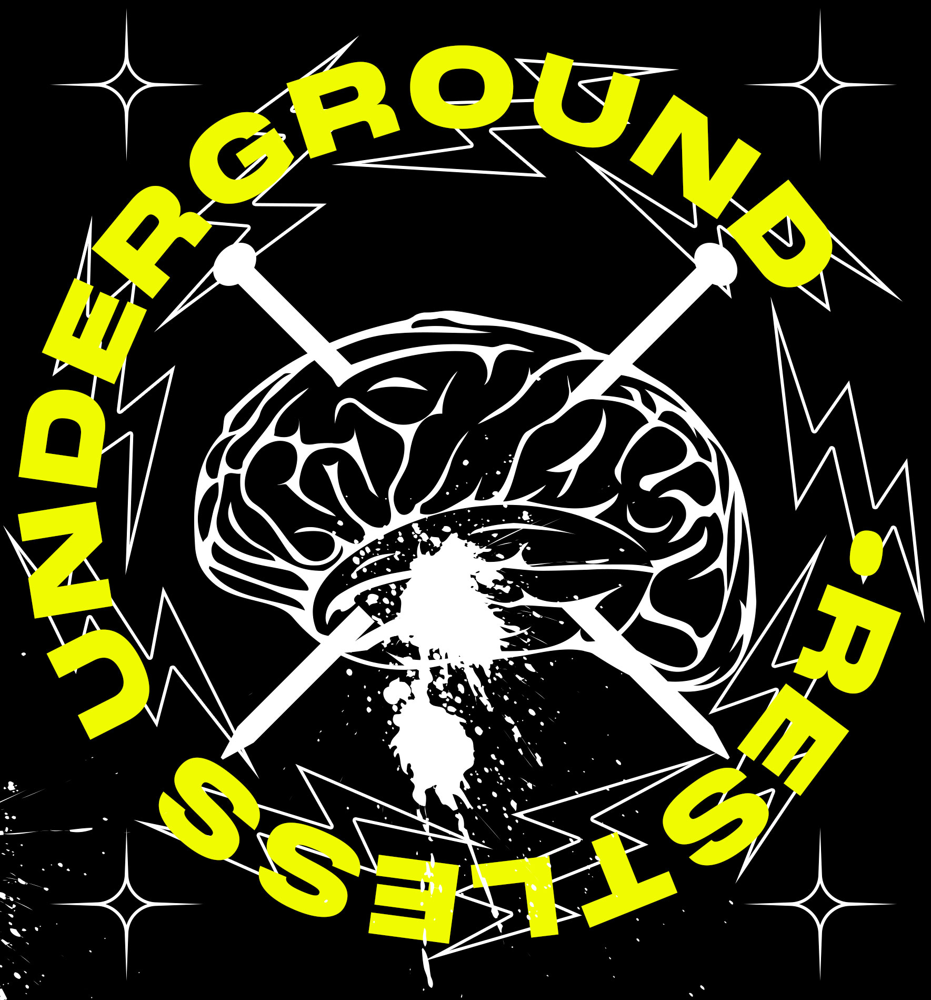

Habilidades y herramientas
Desarrollador Full-Stack Junior, Fotógrafo | TypeScript, React, Node.js
Desarrollador web junior con experiencia práctica creando interfaces limpias y responsivas con HTML, CSS, JavaScript y React, así como implementando lógica básica de back-end. Ha trabajado en proyectos formativos que siguen procesos reales de desarrollo, usando Git, GitHub y Figma. Disfruta colaborar en equipo, mantener un código claro y resolver problemas de forma estructurada. Motivada por seguir aprendiendo, asumir nuevos retos y aprovechar oportunidades para crecer como desarrollador.

Habilidades y herramientas